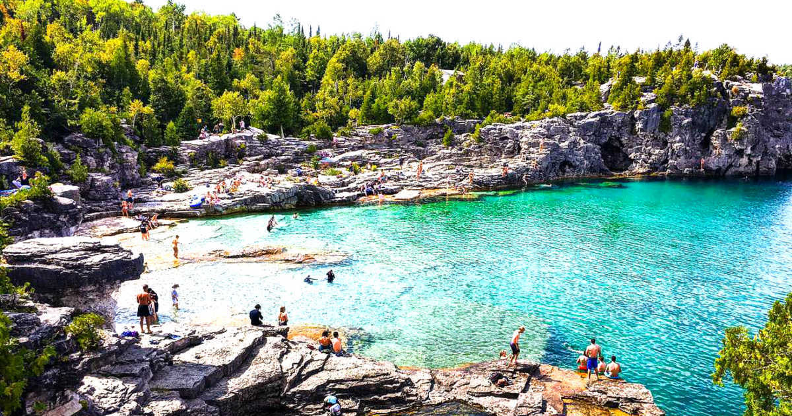

Star Rating: 5 / 5
Points of Interest:
The Bruce Peninsula is an astounding area to visit if you enjoy hiking and nature. The winding pine forest trails and towering cliffs into crystal clear water demand you explore them. After exerting yourself in your travels, The Fish And Chip Place serves amazing white-fish tacos (And I don't even like fish!)
